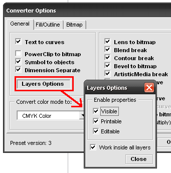
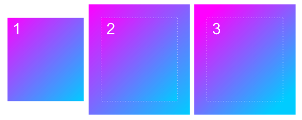
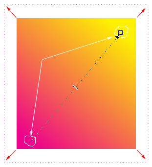
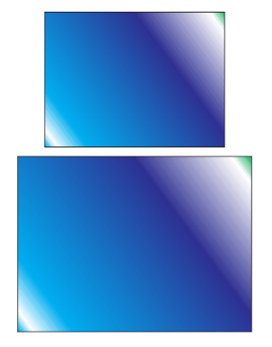

CdrPreflight, что добавить?
Sancho / 25.08.2009, 12:19/00:41
Форум:
Вообщем, настало время сбора ваших пожеланий :)
Что добавить или поправить в следующей версии макроса?
Что добавить или поправить в следующей версии макроса?
Time to collect your suggestions :)
What to add or improve in the next version of the macro?

Как это работает:
Проверяются все слои кроме GuidesLayer и GridLayer.
Первые три галки активируют соответствующие опции слоя.
Четвертая галка позволяет обробатывать объекты в слоях с любым из отключеных свойств, свойства слоя при этом, в конце работы макроса, восстанавливаются на прежние.
Есть ещё один нюанс, который пока не воплотил но видится так: Если во время обработки хотябы одно из 3-х свойств слоя отключено, то этот слой не обрабатывается, если не стоит галочка "работать во всех слоях".
Это всё актуально только для режима без выделения.
Вобщем, если будут пожелания, пишите.
Выношу на рассмотрение следующий вопрос:
быстрое решение проблем без помощи конвертера.
тоесть через контекстное меню или ещё как... ну например, не заходя в конверт, быстро перекинуть одну цветовую модель в другую или сделать определённые замены цвета.
1. надо или нет?
2. как видите решение вопроса?
На рисунке:
1. Оригинал
2. Увеличенный объект, градиент сместился
3. Увеличенный объект, градиент не сместился, (хочется именно так)

Для чего это нужно:
Приносят файл А4 с градиентной заливкой, а нужно сделать на вылет, с каждой стороны, а градиентная заливка смещается.

Если у тебя не сдвигается, то как это настроить?

Страницы